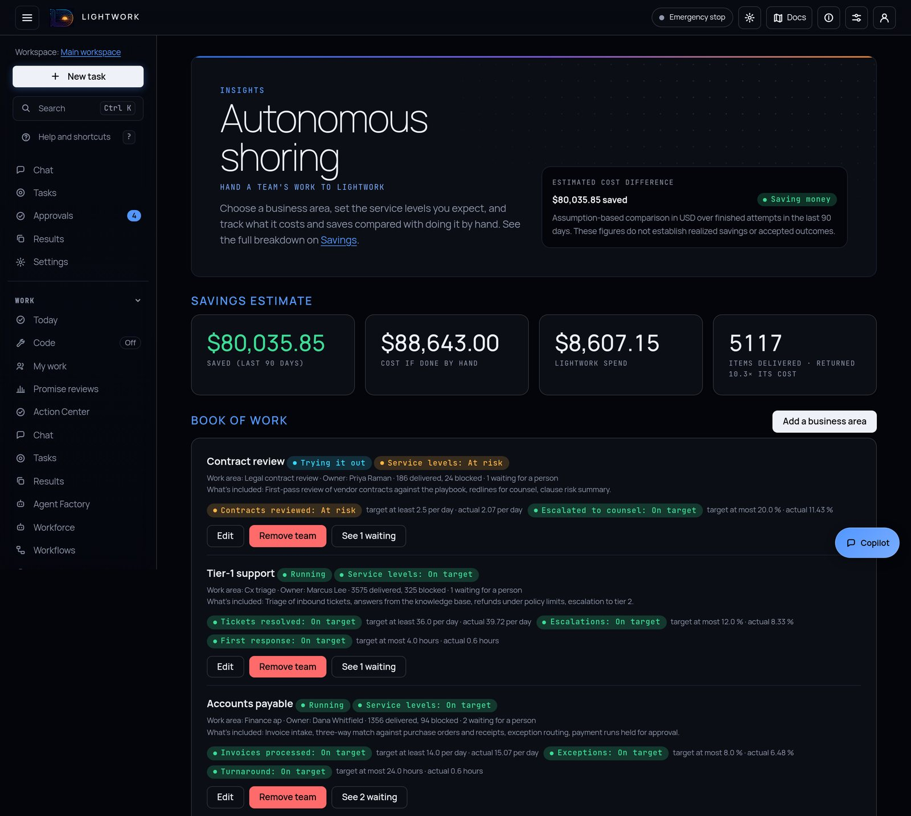
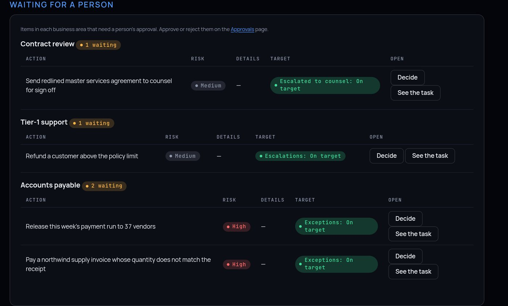

Offshore, nearshore, reshore, onshore: each one moved work to another place, run by other people. Autonomous Shoring moves a whole business function onto AI agents you run yourself. Pick the work, switch on the team, hand it over a stage at a time, and watch every target, every exception and the savings on one page.
Autonomous Shoring is part of every Lightwork install, at /shoring in the dashboard. It works on top of everything else Lightwork does, so moving a function is a sequence of steps you can see, not a leap of faith.

Each business area gets a card: what's included, who owns it, which specialists do the work, the stage it's at, and its service levels against what actually happened over the last 90 days.
Accounts payable, tier-1 support, contract review: give each area a name, the kind of work to measure, an owner and a plain description of what's included.
Decide what moves, let Lightwork do the work alongside your team, switch to Lightwork doing it with people on the exceptions, then measure the results over time.
Items completed per day, the share that needs a person, and the longest time to finish. Each one reads On target, At risk or Missed, straight from finished work, never from a guess.
Enter your loaded hourly rate and how long a task takes a person, overall or per department. Lightwork sets that against its own recorded spend, from 30 days to a year, and the Savings page breaks it down.
Anything that needs a decision, a payment run, an invoice that doesn't match its receipt, a refund over the limit, lands on the exception desk for its business area with Decide and See the task one click away.
Turn on independence levels and you choose how much each specialist does on its own, risk level by risk level: observe, suggest, ask before acting, or act. A newly hired specialist works a level lower until it's promoted.

Lightwork ships with specialists for finance, tax, legal, privacy, customer support, HR, procurement and many industries. Deploy a department's team from the Workforce page. See the specialists
In Agent Factory, describe the agent in plain English or paste the job description you'd post. Lightwork drafts the specialist, its tools and its limits for you to review.
Record what a person does and run lightwork learn-demo. Lightwork removes secrets from the recording, drafts the specialist and its workflow, adds a final review step, and asks you to approve it before it runs.
Ekko looks for the same steps repeated across the apps you allow, then builds private workflow drafts in batches, each run capped at 30 minutes and $5. Nothing is published or run until you say so. Optional, and off until you turn it on.
High-volume, rules-heavy work with a clear definition of done, the kind of work usually sent to an outsourcing provider.
Need a function no specialist covers yet? Describe it, or demonstrate it, and Lightwork drafts one. How specialists are built →
| Question | Outsourcing a function | Autonomous Shoring |
|---|---|---|
| Where does the work run? | In the provider's facility, by the provider's people. | Wherever you run Lightwork: your servers, your cloud account or an air-gapped network. |
| How long is the transition? | Months of knowledge transfer and shadowing. | Switch on specialists, or demonstrate the job and approve the specialist Lightwork drafts, then try it alongside your team. |
| How do you know it's working? | Monthly reports and sampled QA. | Live service levels from every finished item, and every action in a signed record. |
| What happens when the work grows? | Hire, train and re-run the transition. | Switch on more specialists. The targets and the exception desk cover each new area. |
| Does it get better? | Attrition resets what the team knew. | Skills learned on your work are kept once a person admits them, and Cortex remembers your documents and decisions. |
Install Lightwork from source, connect a model provider, then open /shoring in the dashboard and choose Add a business area. The tooling is on by default; set [shoring] enable = false or MAVERICK_SHORING=0 to hide it.
Autonomous Shoring is part of Lightwork, open source under the Apache License 2.0. Run it on your own machine, your own servers or an air-gapped network.